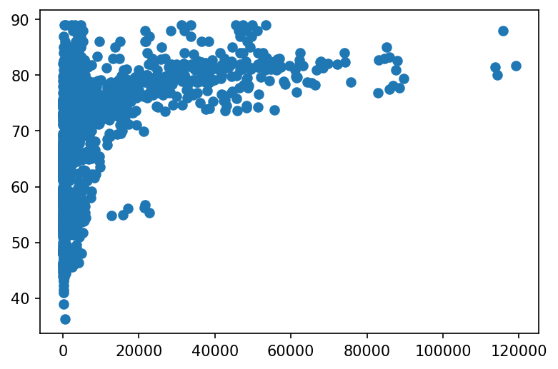
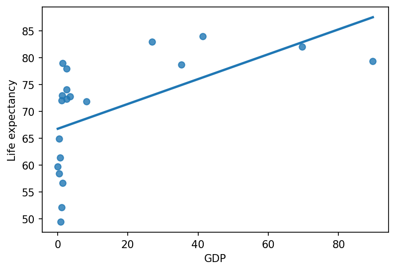
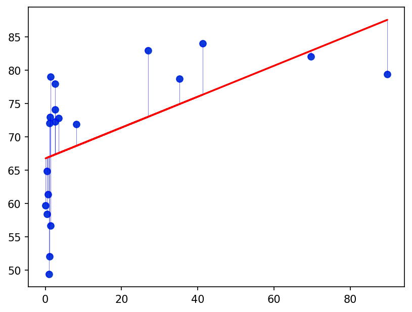
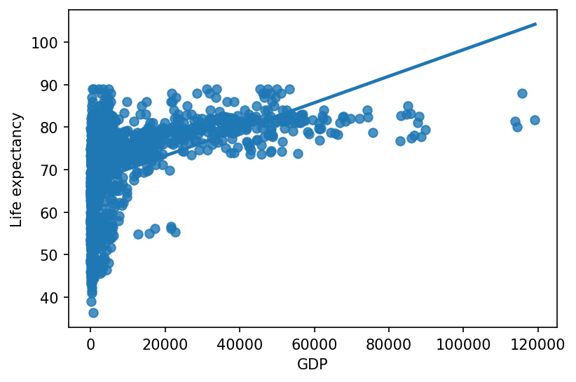

import pandas as pd
df = pd.read_csv("https://raw.githubusercontent.com/vukasin-viskovic/idsss/main/datasets/life_expectancy.csv")Lesson 6 - Intro to ML & Linear Regression
Intro to Data Science for Social Scientists
1. Recap of the previous section
2. An overview of Machine Learning
3. Linear Regression
df.head()| Country | Year | Status | Life expectancy | Adult Mortality | infant deaths | Alcohol | percentage expenditure | Hepatitis B | Measles | ... | Polio | Total expenditure | Diphtheria | HIV/AIDS | GDP | Population | thinness 1-19 years | thinness 5-9 years | Income composition of resources | Schooling | |
|---|---|---|---|---|---|---|---|---|---|---|---|---|---|---|---|---|---|---|---|---|---|
| 0 | Afghanistan | 2015 | Developing | 65.0 | 263.0 | 62 | 0.01 | 71.279624 | 65.0 | 1154 | ... | 6.0 | 8.16 | 65.0 | 0.1 | 584.259210 | 33736494.0 | 17.2 | 17.3 | 0.479 | 10.1 |
| 1 | Afghanistan | 2014 | Developing | 59.9 | 271.0 | 64 | 0.01 | 73.523582 | 62.0 | 492 | ... | 58.0 | 8.18 | 62.0 | 0.1 | 612.696514 | 327582.0 | 17.5 | 17.5 | 0.476 | 10.0 |
| 2 | Afghanistan | 2013 | Developing | 59.9 | 268.0 | 66 | 0.01 | 73.219243 | 64.0 | 430 | ... | 62.0 | 8.13 | 64.0 | 0.1 | 631.744976 | 31731688.0 | 17.7 | 17.7 | 0.470 | 9.9 |
| 3 | Afghanistan | 2012 | Developing | 59.5 | 272.0 | 69 | 0.01 | 78.184215 | 67.0 | 2787 | ... | 67.0 | 8.52 | 67.0 | 0.1 | 669.959000 | 3696958.0 | 17.9 | 18.0 | 0.463 | 9.8 |
| 4 | Afghanistan | 2011 | Developing | 59.2 | 275.0 | 71 | 0.01 | 7.097109 | 68.0 | 3013 | ... | 68.0 | 7.87 | 68.0 | 0.1 | 63.537231 | 2978599.0 | 18.2 | 18.2 | 0.454 | 9.5 |
5 rows × 22 columns
df.columnsIndex(['Country', 'Year', 'Status', 'Life expectancy ', 'Adult Mortality',
'infant deaths', 'Alcohol', 'percentage expenditure', 'Hepatitis B',
'Measles ', ' BMI ', 'under-five deaths ', 'Polio', 'Total expenditure',
'Diphtheria ', ' HIV/AIDS', 'GDP', 'Population',
' thinness 1-19 years', ' thinness 5-9 years',
'Income composition of resources', 'Schooling'],
dtype='object')df.columns = df.columns.str.strip()import matplotlib.pyplot as plt
plt.rcParams["figure.dpi"] = 150fig, ax = plt.subplots()
ax.scatter(df["GDP"], df["Life expectancy"])<matplotlib.collections.PathCollection at 0x278162f4788>
import numpy as npdf_mini = df[["GDP", "Life expectancy"]].dropna()
print(df.shape[0], df_mini.shape[0])
df_mini = df_mini.sample(n = 20, random_state = 42)
df_mini["GDP"] = df_mini["GDP"] / 1000
## Let's add a regression line!
sns.regplot(data = df_mini, x = "GDP", y = "Life expectancy", ci=None)2938 2485<AxesSubplot:xlabel='GDP', ylabel='Life expectancy'>
Show the code
x = np.array(df_mini["GDP"])
y = np.array(df_mini["Life expectancy"])
fig, ax = plt.subplots()
ax.scatter(df_mini["GDP"], df_mini["Life expectancy"])
## obtain m (slope) and b(intercept) of linear regression line
m, b = np.polyfit(x, y, 1)
for i in range(len(x)):
x1, y1 = x[i], y[i]
markerline, stemlines, baseline = ax.stem(x1, y1, linefmt='blue', markerfmt='o', bottom=m*x1 + b)
stemlines.set_lw(0.5)
stemlines.set_alpha(0.5)
markerline.set_markerfacecolor('none')
markerline.set_color('blue')
markerline.set_alpha(0.5)
## use red as color for regression line
ax.plot(x, m*x+b, color='red')
import matplotlib.lines as lines
ax.scatter(df_mini["GDP"], df_mini["Life expectancy"], c = "blue", edgecolors = "none", alpha = 0.5)<matplotlib.collections.PathCollection at 0x27823464548>
import seaborn as sns
## Let's add a regression line!
sns.regplot(data = df, x = "GDP", y = "Life expectancy", ci=None)<AxesSubplot:xlabel='GDP', ylabel='Life expectancy'>
#sns.residplot(data = df_mini, x = "GDP", y = "Life expectancy")